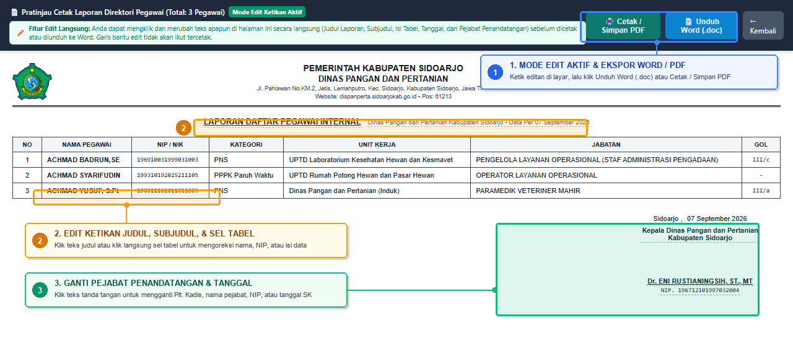
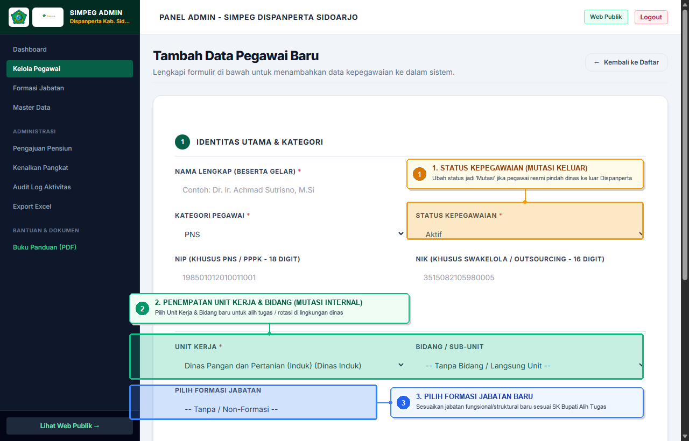
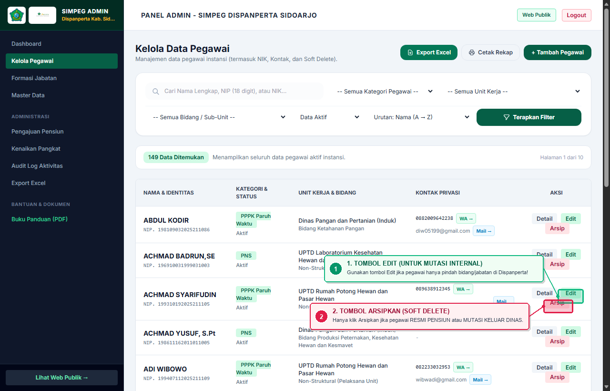
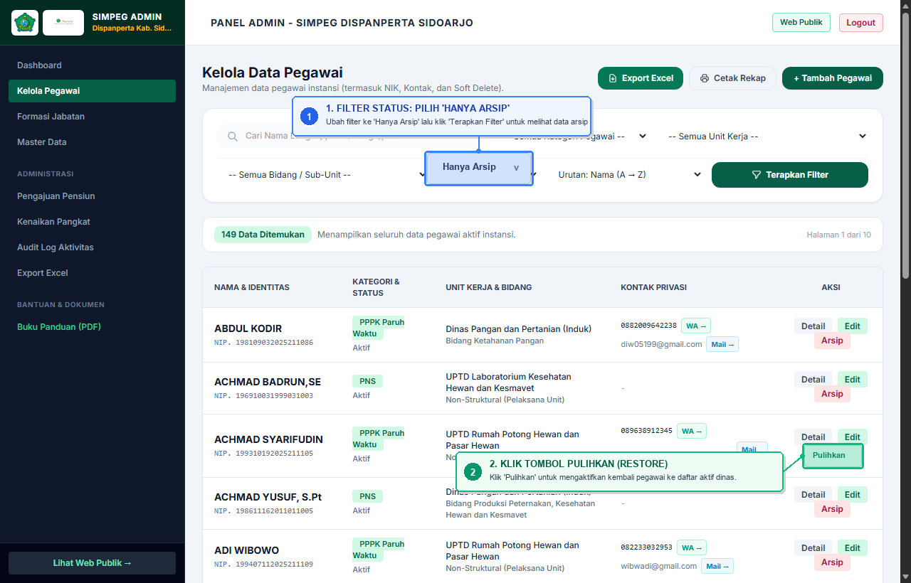

Jl. Pahlawan No.KM.2, Jetis, Lemahputro, Kec. Sidoarjo, Kabupaten Sidoarjo, Jawa Timur 61213
Sub Bagian Umum dan Kepegawaian
Petunjuk Teknis Operasional (Manual Book)
Panduan Penggunaan Sistem Informasi Kepegawaian (SIMPEG)
Dokumentasi resmi tata laksana operasional sistem kepegawaian berbasis tangkapan layar langsung dari instansi Dinas Pangan dan Pertanian Kabupaten Sidoarjo.
Sistem Informasi Kepegawaian (SIMPEG) Dinas Pangan dan Pertanian Kabupaten Sidoarjo merupakan aplikasi web terpadu untuk pencatatan, pemantauan status, dan pelaporan aparatur di lingkungan Kantor Induk dan 5 Unit Pelaksana Teknis Daerah (UPTD). Sistem mencakup PNS, PPPK, PPPK Paruh Waktu, Tenaga Swakelola, dan Tenaga Outsourcing.
Modul / Menu Layanan
Pengguna Publik
Administrator Kepegawaian
Dashboard Statistik & Komposisi Aparatur
Tersedia
Tersedia
Direktori Pegawai & Pencarian NIP
Tersedia
Tersedia
Unduh PDF & Cetak Laporan Pegawai
Tersedia
Tersedia
Bagan Struktur Organisasi Dinas
Tersedia
Tersedia
Kelola Pegawai (Tambah, Edit, Arsip/Soft Delete)
Tidak Tersedia
Hak Akses Penuh
Kelola Formasi Jabatan (Plotting/Anjab)
Tidak Tersedia
Hak Akses Penuh
Pengaturan Master Data Kedinasan
Tidak Tersedia
Hak Akses Penuh
Rekapitulasi Batas Usia Pensiun (BUP)
Tidak Tersedia
Hak Akses Penuh
Usulan Kenaikan Pangkat (KP)
Tidak Tersedia
Hak Akses Penuh
Audit Log Aktivitas & Ekspor Excel (.xlsx)
Tidak Tersedia
Hak Akses Penuh
Bab 2
Dashboard Statistik dan Komposisi Aparatur
Halaman utama publik menampilkan rangkuman data kepegawaian yang diperbarui secara langsung dari basis data. Rincian kategori aparatur ditampilkan per kelompok persentase dan diagram batang persebaran unit kerja:
Gambar 2.1: Tampilan Dashboard Publik menampilkan total 149 personel aktif, kartu kategori (PNS 51, PPPK 15, PPPK Paruh Waktu 72, Swakelola 4, Outsourcing 7), diagram komposisi donat, dan diagram batang sebaran unit kerja.
Elemen Antarmuka pada Dashboard Publik:
Total Pegawai Aktif: Menunjukkan angka agregat pegawai yang tercatat dalam status aktif.
Rincian Kategori: Kartu persentase per kategori pegawai (klik tautan Lihat → untuk langsung memfilter ke direktori pegawai).
Grafik Persebaran Unit Kerja & UPTD: Grafik batang pembagian penempatan pegawai di Kantor Induk dan UPTD wilayah.
Tombol Lihat Direktori Pegawai: Tautan navigasi cepat menuju tabel data pegawai lengkap.
Bab 3
Direktori Pegawai, Cetak Laporan, dan Fitur Live Edit Ketikan
3.1 Direktori Kepegawaian dan Fasilitas Penyaringan Multi-Faktor
Menu Direktori Pegawai menyajikan daftar tabel aparatur lengkap dengan fasilitas penyaringan multifaktor dan ekspor cetak:
http://localhost/dispanperta/public/pegawaiTangkapan Layar: Direktori Pegawai
Gambar 3.1: Halaman Direktori Kepegawaian publik dilengkapi filter Kategori, Eselon/Kelas, Unit Kerja, kotak pencarian Nama/NIP, tombol Download PDF, dan Cetak Laporan.
Prosedur Penggunaan Direktori:
1
Pencarian: Ketikkan nama pegawai atau 18 digit NIP pada kotak pencarian lalu klik Cari Pegawai.
2
Penyaringan: Pilih dropdown Kategori, Eselon / Kelas, atau Unit Kerja untuk mempersempit daftar.
3
Ekspor PDF / Cetak: Klik Download PDF untuk mengunduh dokumen laporan A4 Lanskap resmi, atau Cetak Laporan untuk membuka pratinjau cetak interaktif.
3.2 Fitur Interaktif: Edit Ketikan Langsung Sebelum Cetak / Ekspor Word
Dalam praktik administrasi pemerintahan, staf/operator seringkali perlu menyesuaikan teks judul laporan, mengoreksi ketikan nama atau NIP tertentu, mengubah pejabat penandatangan (misalnya penyesuaian status Pelaksana Tugas / Plt., Plh., atau pendelegasian wewenang Sekretaris Dinas), serta mengubah tanggal penetapan surat tanpa perlu merubah data master di database utama.
Sistem Informasi Kepegawaian Dispanperta dilengkapi fitur In-Place Live Editing (Edit Ketikan Langsung) pada seluruh halaman pratinjau cetak laporan, mencakup:
http://localhost/dispanperta/public/pegawai-cetakPanduan Visual: Mode Edit Ketikan Langsung & Ekspor Word

Gambar 3.2: Pratinjau Cetak Interaktif dengan Mode Edit Ketikan Langsung. Sorotan Biru [1] Toolbar Mode Edit menyediakan tombol Cetak PDF dan Unduh Word (.doc); Sorotan Oranye [2] Edit Judul & Sel Tabel teks dapat diklik dan diketik seketika; Sorotan Hijau [3] Pejabat Penandatangan & Tanggal fleksibel diedit untuk nama, NIP, status Plt./Plh., atau tanggal pengesahan surat.
1Mode Edit & Ekspor Word / PDF
Seluruh ketikan yang Anda ubah di layar otomatis tersimpan utuh saat Anda mengklik tombol Unduh Word (.doc) atau mencetak ke printer/PDF.
2Edit Judul & Isi Baris Tabel
Cukup klik teks judul laporan, periode tanggal, maupun sel baris tabel untuk merevisi ketikan nama/gelar, NIP, atau menambahkan catatan khusus kedinasan secara instan.
3Ubah Penandatangan & Tanggal
Fleksibel mengakomodasi mutasi pimpinan atau penugasan Plt./Plh. Kepala Dinas. Operator dapat langsung mengedit jabatan penandatangan, nama pejabat, NIP, dan tanggal surat.
Panduan Langkah Kerja Mengedit Ketikan Sebelum Cetak:
1
Buka Pratinjau Cetak: Klik tombol Cetak Laporan pada Direktori Pegawai publik, atau tombol Cetak Rekap / Usulan pada panel admin Pensiun dan Kenaikan Pangkat.
2
Perhatikan Penanda Garis Bantu: Teks yang dapat diedit ditandai dengan garis bawah putus-putus halus (dashed line) pada layar monitor. Banner hijau di atas toolbar menunjukkan "Mode Edit Ketikan Aktif".
3
Klik dan Lakukan Pengeditan: Klik kursor Anda pada kata atau kalimat yang ingin diubah. Ketikkan teks perbaikan sebagaimana mengetik di Microsoft Word. Anda dapat mengedit judul, subjudul, isi sel tabel, kota, tanggal, jabatan, nama penandatangan, hingga NIP.
4
Pilih Ekspor Word atau Cetak Langsung: • Unduh Word (.doc): Klik tombol biru Unduh Word (.doc) untuk menghasilkan dokumen Word resmi berformat KOP lengkap dengan seluruh editan ketikan yang telah Anda lakukan.
• Cetak / Simpan PDF: Klik tombol hijau Cetak / Simpan PDF untuk mencetak fisik atau menyimpan PDF. Garis bantu putus-putus otomatis hilang saat dicetak sehingga hasil cetakan tetap bersih dan formal.
Catatan Penting Keamanan Data:
Pengeditan ketikan pada pratinjau cetak bersifat in-memory / client-side khusus untuk kebutuhan penerbitan dokumen cetak dan ekspor Word. Fitur ini tidak akan merubah atau merusak basis data master di server, sehingga integritas data pegawai tetap aman dan terjaga 100%.
Bab 4
Struktur Organisasi Dinas
Menyajikan visualisasi hierarki kepemimpinan dinas sesuai Lampiran Peraturan Bupati Sidoarjo Nomor 29 Tahun 2022 tentang Kedudukan, Susunan Organisasi, Tugas dan Fungsi, serta Tata Kerja Dinas Pangan dan Pertanian Kabupaten Sidoarjo:
http://localhost/dispanperta/public/struktur-organisasiTangkapan Layar: Struktur Organisasi
Gambar 4.1: Bagan Susunan Organisasi menampilkan alur hierarki dari Kepala Dinas, Sekretaris, Kepala Bidang, hingga UPTD.
Bab 5
Akses Masuk Login Administrator
Akses panel administrasi kepegawaian membutuhkan otentikasi akun operator Subbag Umum & Kepegawaian melalui halaman login:
http://localhost/dispanperta/public/loginTangkapan Layar: Form Login
Gambar 5.1: Antarmuka otentikasi akun admin pengelola kepegawaian Dispanperta Sidoarjo.
Instruksi Masuk:
Masukkan alamat email kedinasan terdaftar pada kolom Email.
Masukkan kata sandi pengelola pada kolom Password.
Centang opsi Ingat Sesi Login jika menggunakan komputer kerja kantor dinas.
Klik Masuk ke Panel Admin →.
Bab 6
Panel Dashboard Pengelolaan Admin
Setelah berhasil masuk, administrator diarahkan ke panel kendali utama yang dilengkapi sidebar navigasi terpadu:
Gambar 6.1: Dashboard Pengelolaan Kepegawaian menyajikan tombol tindakan cepat (+ Tambah Pegawai, Export Excel), metrik status formasi jabatan terisi vs kosong, serta pemantauan kategori aktif.
Struktur Navigasi Sidebar Administrator:
Dashboard: Ringkasan statistik dan grafik kendali utama.
Kelola Pegawai: Manajemen pendaftaran, edit, arsip/soft delete, dan kontak.
Formasi Jabatan: Plotting formasi, kelas jabatan, dan kuota kebutuhan.
Master Data: Pengaturan tabel referensi Unit Kerja, Bidang, Kategori, Status.
Pengajuan Pensiun: Monitoring Batas Usia Pensiun (BUP) dan proyeksi purna tugas.
Kenaikan Pangkat: Pengelolaan usulan KP berkala periode April/Oktober.
Audit Log Aktivitas: Rekaman jejak mutasi data oleh akun admin.
Export Excel: Pengunduhan basis data ke format spreadsheet (.xlsx).
Bab 7
Pengelolaan Data Pegawai, Mutasi, dan Pengarsipan (Soft Delete & Restore)
Modul Kelola Pegawai merupakan pusat administrasi aparatur sipil Dispanperta. Modul ini menangani pendaftaran personel baru, pembaruan biodata, pengelolaan mutasi kerja (internal maupun eksternal), serta pengarsipan data secara aman tanpa kehilangan riwayat jejak rekam kedinasan.
http://localhost/dispanperta/public/admin/pegawaiTangkapan Layar: Tabel Pegawai Admin
Gambar 7.1: Antarmuka tabel kelola data pegawai pada panel admin dilengkapi filter status data (Data Aktif vs Hanya Arsip), pengurutan, tombol Export Excel, Cetak Rekap, dan aksi (Detail, Edit, Arsip).
7.1 Prosedur Perekaman Pegawai Baru
Untuk merekam data pegawai baru ke dalam sistem, klik tombol + Tambah Pegawai pada pojok kanan atas tabel:
http://localhost/dispanperta/public/admin/pegawai/createTangkapan Layar: Form Tambah Pegawai
Gambar 7.2: Formulir pendaftaran terstruktur dalam dua tahap: (1) Identitas Utama & Kategori, serta (2) Unit Kerja & Formasi Jabatan.
Langkah-Langkah Pengisian Form Tambah Pegawai:
1
Identitas Diri: Masukkan Nama Lengkap (beserta gelar jika ada), 18 digit NIP resmi (khusus PNS/PPPK), dan NIK KTP.
2
Kategori & Status: Tentukan Kategori Pegawai (PNS, PPPK, PPPK Paruh Waktu, Swakelola, Outsourcing) dan Status Kepegawaian (default: Aktif).
3
Data Kelahiran & Golongan: Masukkan Tempat Lahir, Tanggal Lahir, Pendidikan Terakhir, dan Golongan/Ruang (contoh: III/a, IV/b).
4
Unit Kerja & Formasi Jabatan: Tentukan penempatan Unit Kerja (Kantor Induk atau salah satu dari 5 UPTD), Bidang, dan Formasi Jabatan definitif yang berstatus lowong.
5
Kontak & TMT: Isi Nomor WhatsApp/HP, Email kedinasan, dan TMT Jabatan, kemudian klik Simpan Pegawai Baru.
7.2 Standar Operasional Prosedur (SOP) Mutasi Pegawai
Mutasi adalah perpindahan tugas, jabatan, atau instansi berdasarkan Surat Keputusan (SK) resmi. Dalam operasional SIMPEG Dispanperta, penanganan mutasi dibedakan secara tegas menjadi dua jenis skenario:
http://localhost/dispanperta/public/admin/pegawai/createPanduan Visual: Form Mutasi & Penempatan

Gambar 7.3: Panduan Visual Titik Pengisian Mutasi pada Formulir Pegawai. Kotak [1] Status Kepegawaian (ubah ke Mutasi hanya jika pindah keluar Dispanperta); Kotak [2] Penempatan Unit Kerja & Bidang (rotasi internal di dinas); Kotak [3] Pemilihan Formasi Jabatan baru sesuai SK Alih Tugas.
1Status Kepegawaian
Pilih "Mutasi" hanya jika pegawai pindah ke instansi lain di luar Dispanperta. Jika mutasi internal di dinas, biarkan tetap "Aktif".
2Unit Kerja & Bidang
Ubah penempatan ke Unit Kerja / Bidang / UPTD baru untuk pergeseran tugas internal Dispanperta sesuai SK penempatan.
3Formasi Jabatan Baru
Pilih Formasi Jabatan definitif baru yang lowong. Status formasi lama akan otomatis dilepas dan formasi baru akan terisi.
Skenario 1: Mutasi Internal (Pindah Bidang / Seksi / UPTD di Lingkungan Dispanperta)
Kapan dilakukan: Ketika pegawai mengalami rotasi penempatan, alih tugas, atau promosi yang lokasinya masih berada di dalam naungan Dinas Pangan dan Pertanian Kabupaten Sidoarjo (contoh: dari Bidang Tanaman Pangan pindah ke Bidang Peternakan atau ke UPTD Puskeswan).
Langkah-Langkah Detail Mutasi Internal:
1
Buka menu Kelola Pegawai, lalu cari nama pegawai yang bersangkutan.
2
Klik tombol Edit (ikon pensil kuning) pada baris data pegawai.
3
Pada bagian formulir penempatan, ubah dropdown Unit Kerja dan/atau Bidang ke unit kerja yang baru sesuai SK.
4
Pilih Formasi Jabatan baru yang dituju, serta perbarui kolom TMT Jabatan sesuai tanggal efektif SK penugasan baru.
5
Pastikan kolom Status Kepegawaian tetap bernilai "Aktif".
6
Klik Simpan Perubahan.
PERHATIAN: Pada mutasi internal, JANGAN klik tombol "Arsipkan", karena pegawai bersangkutan masih aktif bekerja di dinas!
Skenario 2: Mutasi Keluar (Pindah Instansi ke Luar Dispanperta)
Kapan dilakukan: Ketika pegawai resmi pindah tugas keluar dari Dispanperta (misalnya mutasi ke Bappeda, BKPSDM, Sekretariat Daerah, Dinas lain di Pemkab Sidoarjo, atau mutasi antar-daerah ke luar Kabupaten Sidoarjo).
Langkah-Langkah Detail Mutasi Keluar:
1
Buka menu Kelola Pegawai dan klik tombol Edit pada data pegawai yang pindah.
2
Ubah pilihan dropdown Status Kepegawaian dari "Aktif" menjadi "Mutasi".
3
Klik tombol Simpan Perubahan.
4
Setelah kembali ke tabel utama, cari baris data pegawai tersebut lalu klik tombol merah "Arsipkan".
5
Pada kotak dialog konfirmasi, klik OK. Data pegawai kini berpindah status ke arsip kedinasan.
Dampak Sistematis Melakukan Arsip pada Mutasi Keluar:
Formasi jabatan lama yang ditinggalkan di Dispanperta otomatis menjadi Kosong (Vacant) sehingga kuotanya dapat segera diisi pegawai pengganti.
Nama pegawai tidak lagi membebani daftar pegawai aktif publik maupun rekap proyeksi pensiun aktif Dispanperta.
Seluruh riwayat SK dan pangkat masa lalu selama berdinas di Dispanperta tetap tersimpan aman 100% di basis data untuk kebutuhan audit kepegawaian.
7.3 Tata Cara Pengarsipan Pegawai (Soft Delete) vs Mutasi
Perbedaan fundamental antara status "Mutasi" dan tindakan "Diarsipkan" dijelaskan secara komprehensif pada tabel berikut:
Parameter Perbandingan
Status Mutasi
Tindakan Diarsipkan (Soft Delete)
Bentuk di Sistem
Opsi pilihan dropdown pada formulir data (kolom Status Kepegawaian).
Tombol tindakan berwarna merah bertuliskan "Arsipkan" di tabel admin.
Kapan Digunakan
Saat pegawai menerima SK Alih Tugas / Mutasi resmi.
Saat pegawai sudah resmi berhenti/tidak lagi berdinas di kantor Dispanperta.
Muncul di Tabel Utama?
Ya, masih muncul selama belum diarsipkan.
Tidak (dipindahkan ke filter Hanya Arsip).
Status Formasi Jabatan
Tetap mengikat formasi jabatan yang diduduki.
Otomatis dilepas menjadi Kosong (dapat diisi pegawai baru).
Keberadaan Data Fisik
Tersimpan di tabel operasional aktif.
Tetap tersimpan utuh di database (Soft Delete) & dapat dipulihkan kapan saja.
5 Kondisi Resmi Kapan Tombol "Arsipkan" Harus Digunakan:
Pegawai Resmi Purna Tugas (Pensiun): Tanggal TMT SK pensiun telah tiba dan pegawai sudah tidak aktif berdinas.
Pegawai Mutasi Keluar Instansi: Telah menerima SK mutasi keluar dan telah bertugas di dinas/daerah lain.
Pegawai Wafat: Meninggal dunia dalam masa dinas aktif.
Pegawai Diberhentikan / Habis Kontrak: Mengundurkan diri, diberhentikan dengan hormat, atau masa kontrak honorernya usai.
Pembersihan Data Ganda (Duplikat): Terjadi kekeliruan operator yang menginput nama pegawai sebanyak dua kali.
http://localhost/dispanperta/public/admin/pegawaiPanduan Visual: Tombol Aksi Edit vs Arsipkan

Gambar 7.4: Perbedaan Tombol Aksi pada Tabel Pegawai. Sorotan Hijau [1] Tombol Edit untuk mutasi/rotasi internal; Sorotan Merah [2] Tombol Arsipkan hanya untuk pegawai purna tugas (pensiun) atau mutasi keluar dinas.
1Tombol Edit (Mutasi Internal)
Gunakan tombol Edit jika pegawai hanya bergeser bidang atau jabatan di lingkungan Dispanperta. Pegawai tetap berstatus aktif dan formasi jabatannya langsung disesuaikan tanpa melepas kepegawaian.
2Tombol Arsipkan (Soft Delete)
Gunakan tombol merah Arsipkan jika pegawai sudah resmi Pensiun atau Mutasi Keluar Instansi. Kursi formasi lama otomatis menjadi kosong (lowong) tanpa menghapus rekam jejak.
7.4 Tata Cara Memulihkan Data Pegawai yang Diarsipkan (Restore)
Apabila pengarsipan pegawai dilakukan karena pembatalan mutasi, penundaan pensiun, atau kesalahan klik, data pegawai dapat dipulihkan kembali secara utuh:
Langkah-Langkah Pemulihan Data (Restore):
1
Buka menu Kelola Pegawai pada panel navigasi admin.
2
Pada bilah filter di atas tabel, cari dropdown Status Data (yang secara default bernilai "Data Aktif").
3
Ubah pilihan filter tersebut menjadi "Hanya Arsip (Soft Deleted)".
4
Tabel akan menyaring dan menampilkan seluruh berkas pegawai yang berstatus arsip. Cari nama pegawai yang hendak dipulihkan.
5
Klik tombol hijau "Pulihkan" pada kolom Aksi di baris pegawai tersebut.
6
Konfirmasi dialog pemulihan. Pegawai akan langsung aktif kembali di tabel operasional harian, formasi jabatannya kembali terpasang, dan proyeksi BUP pensiun otomatis aktif kembali.
http://localhost/dispanperta/public/admin/pegawai?status_data=trashedPanduan Visual: Filter Status & Pemulihan (Restore)

Gambar 7.5: Prosedur Pemulihan Berkas Pegawai (Restore). Langkah [1] Mengubah filter status data menjadi "Hanya Arsip" lalu klik Terapkan Filter; Langkah [2] Mengklik tombol hijau "Pulihkan" untuk mengaktifkan kembali pegawai ke dinas.
1Filter Status "Hanya Arsip"
Bilah pencarian tabel dilengkapi filter status data. Pilih "Hanya Arsip" lalu klik tombol Terapkan Filter untuk menampilkan seluruh berkas pegawai yang pernah dinonaktifkan / diarsipkan.
2Tombol Hijau "Pulihkan"
Klik tombol "Pulihkan" pada baris pegawai. Seluruh biodata, relasi ke formasi, riwayat usulan pangkat, dan kalkulasi BUP pensiun akan otomatis kembali aktif seketika.
7.5 Pengaruh Status Arsip & Mutasi terhadap Modul Kenaikan Pangkat dan Pensiun
Sistem SIMPEG Dispanperta mengintegrasikan relasi data yang sinkron agar tindakan mutasi maupun pengarsipan tidak menghilangkan rekam jejak kedinasan masa lalu:
Dampaknya pada Modul Kenaikan Pangkat:
Riwayat Pangkat Lama TETAP TAMPIL: Seluruh riwayat usulan kenaikan pangkat yang pernah diajukan saat pegawai masih aktif tetap tersimpan permanen dan nama pegawai tetap terbaca di tabel arsip kenaikan pangkat.
Usulan Baru Otomatis DIBLOKIR: Pegawai yang berstatus diarsipkan atau sudah pensiun resmi otomatis dihilangkan dari dropdown formulir usulan pangkat baru guna mencegah kekeliruan administratif.
Pegawai Mutasi Internal: Tetap berhak dan dapat diajukan usulan kenaikan pangkat secara berkala seperti biasa.
Dampaknya pada Modul Rekap Pensiun:
Otomatis Dikeluarkan dari Rekap Aktif: Pegawai yang diarsipkan tidak lagi muncul dalam daftar proyeksi pensiun aktif tahunan dinas, sehingga angka statistik kebutuhan pegawai tetap presisi.
Data SK Pensiun Resmi Tersimpan Aman: Apabila pegawai memiliki catatan SK pengajuan pensiun di sistem, data tersebut tetap tersimpan di basis data dan tidak ikut terhapus.
Sinkronisasi Instan saat Restore: Jika pegawai di-restore/dipulihkan, estimasi BUP otomatis terhitung kembali sesuai 8 digit NIP lahirnya.
Bab 8
Pengelolaan Formasi Jabatan dan Anjab
Memetakan seluruh formasi jabatan, penanggung jawab definitif, serta kelas jabatan untuk keperluan Analisis Jabatan dan Analisis Beban Kerja (Anjab/ABK):
http://localhost/dispanperta/public/admin/formasi-jabatanTangkapan Layar: Formasi Jabatan
Gambar 8.1: Daftar Formasi Jabatan menampilkan kartu status (Total Formasi, Terisi, Lowong/Kosong), filter unit kerja dan status, serta tabel pemetaan pejabat definitif.
Ketentuan Penambahan Formasi:
Klik + Tambah Formasi untuk menetapkan formasi baru. Tentukan Nama Jabatan, Unit Kerja, Bidang, dan Kelas Jabatan (Kelas 1 s/d 18). Pegawai baru dapat langsung di-plotting ke formasi bersangkutan.
Bab 9
Pengaturan Master Data Kedinasan
Master Data memungkinkan penyesuaian parameter dinas tanpa perlu melakukan perombakan skema database atau source code:
http://localhost/dispanperta/public/admin/master-dataTangkapan Layar: Master Data
Gambar 9.1: Panel Master Data menampilkan 4 komponen kendali: Master Unit Kerja, Master Bidang, Master Kategori Pegawai, dan Master Status Kepegawaian beserta jumlah pegawai terikat.
Bab 10
Administrasi Batas Usia Pensiun (BUP)
Sistem menghitung tanggal pensiun secara otomatis berdasarkan tanggal lahir NIP pegawai (58 tahun untuk Pelaksana/Fungsional Pertama, 60 tahun untuk Pejabat Pimpinan Tinggi dan Fungsional Madya):
Gambar 10.1: Panel Rekapitulasi BUP menyajikan ringkasan proyeksi pensiun tahun berjalan, tahun depan, dan proyeksi 5 tahun, dilengkapi indikator sisa masa kerja serta tombol Cetak Rekap.
Fasilitas Pencetakan Laporan Pensiun:
Klik tombol Cetak Rekap untuk menghasilkan lembar usulan nominatif BUP bagi Badan Kepegawaian Daerah (BKD), yang telah memuat tanggal lahir resmi, TMT pensiun terhitung, dan kolom tanda tangan pengesahan pimpinan.
Tips Fitur Edit Ketikan: Halaman pratinjau cetak pensiun mendukung fitur Live Edit langsung untuk menyesuaikan judul laporan, nama/NIP pegawai di tabel, pejabat penandatangan (Plt. Kepala Dinas), dan tanggal surat sebelum dicetak atau diunduh ke Word (.doc) — lihat panduan Bab 3.2.
10.2 Standar Operasional Penanganan Pegawai Masuk Purna Tugas
Langkah-Langkah Detail Administrasi Purna Tugas:
1
Monitoring Berkala: Periksa kolom Sisa Waktu pada tabel pensiun. Pegawai dengan tanda < 6 Bulan (Mendesak) merupakan prioritas utama pemberkasan ke BKD.
2
Perekaman Pengajuan Pensiun: Klik tombol + Tambah Pengajuan Pensiun, pilih nama pegawai PNS bersangkutan, tentukan tanggal pengajuan berkas dan tanggal resmi TMT Pensiun.
3
Pencetakan Berkas Usulan: Klik Cetak Rekap untuk mencetak daftar nominatif resmi ber-KOP Dispanperta yang dilengkapi kolom tanda tangan Kepala Dinas untuk dikirimkan ke BKD Sidoarjo.
4
Finalisasi Pengarsipan saat TMT Tiba: Ketika tanggal TMT Pensiun resmi tiba dan SK Pensiun telah berlaku, buka menu Kelola Pegawai, edit status kepegawaian menjadi "Pensiun", lalu klik tombol "Arsipkan". Dengan langkah ini, kursi formasi jabatan di Dispanperta resmi lowong dan siap diusulkan pengisiannya melalui formasi CPNS/PPPK baru.
Gambar 10.2: Fitur Tindak Lanjut Purna Tugas pada Modul Pensiun. Tombol Biru [1] Cetak Rekap untuk mencetak usulan nominatif BUP ke BKD; Tombol Hijau [2] + Catat Berkas Pensiun untuk merekam SK pengajuan resmi; Penanda Oranye/Merah [3] Peringatan Masa Kerja < 6 Bulan sebagai prioritas pemberkasan.
1Cetak Rekap Nominatif BKD
Menghasilkan dokumen resmi ber-KOP Dispanperta yang memuat proyeksi BUP lengkap dengan kolom tanda tangan pimpinan untuk dikirim ke BKD / BKN.
2+ Catat Berkas Pensiun
Mencatat nomor usulan, tanggal persetujuan BKD, dan pengunggahan berkas digital SK pensiun ke dalam sistem arsip kepegawaian.
3Peringatan < 6 Bulan (Mendesak)
Sistem secara proaktif mendeteksi pegawai yang memasuki 6 bulan sebelum TMT BUP agar pengelola kepegawaian segera memproses berkas ke BKD.
Bab 11
Usulan Kenaikan Pangkat (KP) dan Validasi
Modul ini mengelola berkas nominatif usulan kenaikan pangkat berkala aparatur, terintegrasi dengan validasi batas masa pensiun:
Gambar 11.1: Tabel daftar usulan kenaikan pangkat dengan informasi golongan lama, golongan usulan, TMT diusulkan, batas pensiun, dan tombol Cetak Usulan.
Sistem Validasi Otomatis:
Sistem secara otomatis memeriksa kelayakan aparatur yang didaftarkan. Pengajuan usulan kenaikan pangkat akan ditolak secara otomatis apabila tanggal TMT usulan melampaui tanggal Batas Usia Pensiun yang bersangkutan.
Tips Fitur Edit Ketikan & Ekspor Word: Halaman cetak berkas usulan kenaikan pangkat juga mendukung Live Edit untuk mengoreksi teks tabel, mengganti nama/NIP penandatangan, serta mengunduh format Microsoft Word (.doc) — lihat panduan Bab 3.2.
11.2 Alur Pemrosesan Usulan dan Kebijakan Pegawai Mutasi / Pensiun
Buka Formulir Usulan: Klik tombol + Tambah Usulan Pangkat di pojok kanan atas tabel.
2
Pemilihan Aparatur: Dropdown pegawai hanya memuat PNS aktif yang belum pensiun. Pegawai berstatus arsip/mutasi keluar otomatis tidak dimunculkan oleh sistem.
3
Entri Golongan & TMT: Masukkan Golongan Lama, Golongan Usulan (contoh: III/b → III/c), dan TMT Usulan (disesuaikan dengan 6 periode kenaikan pangkat BKN).
4
Validasi Otomatis Batas Usia Pensiun: Sistem otomatis menolak penyimpanan jika TMT Usulan melampaui tanggal pensiun pegawai. Pegawai yang sudah purna tugas tidak dapat diusulkan kenaikan pangkat.
5
Arsip Historis Abadi: Seluruh riwayat usulan pangkat yang berhasil disimpan akan tetap tercatat di sistem selamanya. Sekalipun kelak pegawai tersebut pensiun atau mutasi keluar dinas dan diarsipkan, nama dan riwayat pangkat lamanya tetap utuh tersimpan sebagai rekam jejak kedinasan.
Gambar 11.2: Fitur Usulan Kenaikan Pangkat dan Validasi Cerdas. Tombol Hijau [1] + Tambah Usulan Pangkat otomatis menyaring aparatur aktif (pegawai arsip/pensiun terblokir); Sorotan Oranye [2] Validasi TMT vs Batas Pensiun memastikan usulan kenaikan pangkat tidak melampaui usia pensiun PNS.
1Tambah Usulan (Penyaringan Aktif)
Formulir usulan hanya mengizinkan pemilihan PNS aktif. Pegawai yang telah diarsipkan atau pensiun resmi disaring otomatis untuk menjaga integritas data kepegawaian.
2Validasi Cerdas Batas Pensiun
Sistem secara otomatis membandingkan TMT Usulan dengan Batas Pensiun. Apabila TMT Usulan > Tanggal Pensiun, pengajuan akan otomatis ditolak dan tidak dapat disimpan.
Bab 12
Audit Log Aktivitas dan Ekspor Excel
Seluruh aktivitas perubahan data tercatat dalam audit log untuk memenuhi prinsip akuntabilitas dan tata kelola instansi pemerintah:
Gambar 12.1: Log audit aktivitas mencatat waktu, identitas akun admin pengelola, jenis aksi, deskripsi aktivitas, dan alamat IP Address pengakses.
Ekspor Data ke Microsoft Excel:
Pada menu Export Excel di sidebar atau tombol Export Excel di daftar pegawai, sistem akan menghasilkan file berekstensi .xlsx secara langsung melalui pustaka PhpSpreadsheet. File ini memuat data lengkap seluruh kolom aparatur yang siap digunakan untuk sinkronisasi dengan BKD Sidoarjo.